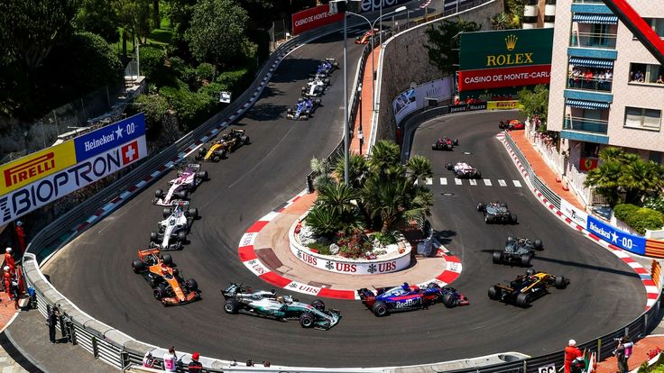

Resumen Actual
Para la temporada 2026, el calendario oficial de la Fórmula 1 consta de 24 carreras denominadas Grandes Premios, las cuales se disputan en circuitos de Grado 1 certificados por la FIA que incluyen trazados permanentes icónicos como Silverstone (Gran Bretaña), Suzuka (Japón) y el Red Bull Ring (Austria), además de circuitos urbanos o semipermanentes como Mónaco, Las Vegas, Singapur y el nuevo trazado de Madrid, que se incorpora como sede del Gran Premio de España. En cada uno de estos eventos se compite simultáneamente por dos títulos: el Campeonato Mundial de Pilotos de la FIA y el Campeonato Mundial de Constructores de la FIA.
